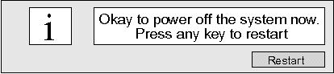
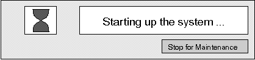

Proprietary to General Electric
Direction 5114043-800, Rev# 9
LightSpeed 3.X Service Methods (Advanced)
Proprietary to General Electric |
The Command (PROM) Monitor program controls the boot environment for all Silicon Graphics workstations. With the Command Monitor, you can boot and operate the CPU under controlled conditions, run the CPU in Command Monitor mode, and load programs like the operating system kernel or special debugging and execution versions of the kernel.
PROM stands for Programmable Read-Only Memory. Most PROM chips are programmed at the factory with software that 1) allows the CPU to boot, and 2) allows you to perform system administration and software installations. The PROMs are not part of your disk or operating system; they are the lowest level of access available for your system. You cannot erase or bypass them.
Shutdown then restart the system, or if the system is already off, turn it on. By default, the PROM attempts to boot the OS when the system is powered on or reset. To prevent the boot-up and get to the command prompt monitor, press <ESC> or click the [STOP FOR MAINTENANCE] button. Select item 5 on the following menu:
System Maintenance Menu
1 Start System
2 Install System Software
3 Run Diagnostics
4 Recover System
5 Enter Command Monitor
6 Select Keyboard Layout
>
The procedure for entering Command Monitor follows:
Restart the system: If the host computer is OFF, turn it ON and proceed to Step 2. If the host computer is ON, bring it down appropriately. After a few seconds, the screen will clear and you will see a notification like the one shown in Illustration 1. Select the [RESTART] button.
| NOTE: | If the system is malfunctioning and a user cannot communicate with it using the mouse or keyboard, then press the reset switch on the front chassis. |
Immediately click on [STOP FOR MAINTENANCE] or press the <ESC> key. You only have three to five seconds to perform this action (refer to Illustration 2).
The following Host Maintenance menu appears. Select item 5 in the following menu.
System Maintenance Menu
1 Start System
2 Install System Software
3 Run Diagnostics
4 Recover System
5 Enter Command Monitor
6 Select Keyboard Layout
Illustration 1: Okay to Power Off System - Notification Screen

Illustration 2: Maintenance Option Menu

The following commands are available at the boot PROM level.
Table 1: Command Monitor (Command Summary)
| COMMAND | WHAT IT DOES | SYNTAX |
|---|---|---|
| auto | Boots default operating system (no arguments). This has the same effect as choosing Start System from the PROM Monitor initial menu. | auto |
| boot | Boots the named file with the given arguments. | boot[-f ][-n] pathname |
| date | Displays or sets the date and time. | date[mmddhhmm[ccyy|yy][.ss]] |
| exit | Leaves Command Monitor and returns to the PROM menu. | exit |
| help | Prints a Command Monitor command summary. | help[command] ? [command] |
| hinv | Prints an inventory of known hardware on the system. Some optional boards may not be known to the PROM monitor. | hinv |
| init | Partially restarts the Command Monitor, noting changed environment variables. | init |
| ls | Lists files on a specified device. | lsdevicename |
| printenv | Displays the current environment variables. | printenv[env_var_list] |
| printenv eaddr | Prints the Ethernet address of the built-in Ethernet controller. | printenv eaddr |
| resetenv | Resets all environment variables to default. | resetenv |
| resetpw | Resets the PROM password to null (no password required). | resetpw |
| setenv | Sets environment variables. Using the -p flag makes the variable setting persistent, i.e., the setting remains through reboot cycles. | setenv[-p] variable value |
| single | Boots the system into single-user mode. | single |
| unsetenv | Un-sets an environment variable. | unsetenv variable |
| version | Displays Command Monitor version. | version |
Variables are used to tell the Host how to boot-up. These “environmental” variables are stored on the Host Computer (Octane), within PROM. Use the printenv command to list the current state of these variables.
The following is a typical example of these variables and their associated values. Although comments are provided (2nd column), use the UNIX command man prom for additional information. Compare your default settings to those listed below.
> printenv
| AutoLoad=Yes | Controls if the system boots automatically on reset/power cycle |
| console=g | The console variable “g” indicates it is connected to a graphics display |
| diskless=0 | Sets the system to boot from disk |
| nogfxkbd=1 dbaud=9600 | This is the diagnostic baud rate. It can be used to specify a baud rate other than the default when a terminal connected to serial port #1 is to be used as the console |
| volume=0 | Sets the speaker volume during boot up |
| sgilogo=y | Set to y, the SGI logo shown during boot-up |
| autopower=y | The y setting allows the system to automatically power back on after an AC power failure |
| netaddr=192.9.220.10 | The OC's assigned internet address. Used when booting or installing software from a remote system by Ethernet |
| eadder=08:00:69:0a:27:b6 | The ethernet address of the built-in Ethernet controller. Set at factory, cannot be changed |
| boottune=1 | Setting of 1 is default tune. Not supported in Octane, even though it is listed |
| ConsoleOut=video( ) | Set at system startup automatically from the console variable. |
| ConsoleIn=keyboard( ) | Set at system startup automatically from the console variable |
| cpufreq=195 (or 225) | processor frequency |
| SystemPartition=xio(0)pci(15)scsi(0)disk(1)rdisk(0)partition(8) | The device where the operating system loader is found |
| OSLoadPartition=xio(0)pci(15)scsi(0)disk(1)rdisk(0)partition(0) | The device partition where the core IRIX operating system is found |
| OSLoadFilename=/unix | This is the filename of the operating system kernel |
| OSLoader=sash | This is the operating system loader, which is sash for IRIX |
| gfx=alive | Enables graphics on the console |
If a new keyboard is not set to the site's language, press [STOP FOR MAINTENANCE] while the SGI host is booting to get its System Maintenance Menu. Then select the last item on this menu to get the Keyboard Layout choices. Select the desired language, like US for USA English.
Table 2: Keyboard Choices (Language)
| KEYBOARD LAYOUT CHOICE | LANGUAGE | SUPPORTED BY CT |
|---|---|---|
| BE | Belgian | |
| DE | German | X |
| de_CH | Swiss German | |
| DK | Danish | |
| ES | Spanish | |
| FI | Finnish | |
| FR | French | X |
| fr_CH | Swiss French | |
| GB | Great Britain | |
| IT | Italian | |
| NO | Norwegian | |
| PT | Portuguese | |
| SE | Swedish | |
| US | United States | X |
There are a number of operating system configuration parameters (flags) that are set automatically during the CT application load on the OC Octane. Under normal conditions, you should never have to manually change the state of these flags. In the unlikely event of a software corruption, one can view the state of each of the flags as a part of troubleshooting, to verify they are set correctly, by running chkconfig. Also, if one of the states is found wrong, chkconfig can be used to set it back to the correct state.
Table 3 shows a list of the flags and the states that they should be in after the application load for the OC Octane. Enter the following to list the flags and their current states:
Verify that Applications is shut down.
Open a UNIX shell from the Toolchest.
su - [ENTER] .
chkconfig [ENTER] .
Table 3: OC Octane: States and Flags
| FLAG | STATE | FLAG | STATE |
|---|---|---|---|
| autoconfig_ipaddress | off | proclaim_relayagent | off |
| autofs | off | proclaim_server | off |
| automount | on | rarpd | off |
| change_sts | off | routed | off |
| desktop | on | rsvpd | off |
| fcagent | on | rtmond | on |
| fontserver | off | rwhod | off |
| gated | on | sar | off |
| impact_trace | on | savecore | on |
| ipaliases | on | sendmail | on |
| lockd | on | snetd | on |
| lp | on | soundscheme | off |
| mediad | off | timed | off |
| miser | off | timeslave | off |
| mrouted | off | verbose | off |
| named | off | videod | off |
| nds | off | visuallogin | off |
| network | on | vswap | off |
| nfs | on | windowsystem | on |
| noiconlogin | off | xdm | on |
| nostickytmp | off | yp | off* |
| nsd | on | ypmaster | off |
| pmcd | off | ypserv | off |
| privileges | on | ||
| *This parameter may be on if site is running NIS (yellow pages) | |||
| Potential for Data Loss. Setting these flags to a wrong state can prevent the system from coming up properly. Use caution. | |
To manually change the state of a flag (only if it is improperly set), enter the following:
chkconfig <flag> <state> [ENTER] (where state is on or off).
reboot [ENTER] .
After the reboot, the flag(s) will be re-read and the change(s) made will take effect. For further details on each of the flags, look at the man page for chkconfig.
su - [ENTER]
man chkconfig [ENTER]
When the system is first powered on, the PROM runs a series of tests on the core components of the system. It then performs certain hardware initialization functions such as starting up SCSI hard disks, initializing graphics hardware, and clearing memory. Upon successful completion of these tasks, the PROM indirectly starts the operating system by invoking a bootstrap loader program called “sash”, which in turn reads the IRIX kernel from disk and transfers control to it.
The host computer records startup, errors and shutdown information.It recorded in a text file called SYSLOG that’s located in the directory /var/adm.The file SYSLOG is the most recent log. The SYSLOG files with the extension 0 through 7 are from the last eight days. In this example we have nothing for logs 4 through 7, because a software load was previously done on the 21st of the month.
Example: Listing available SYSLOG files
{ctuser@msecrp2}[4] cd /var/adm
{ctuser@msecrp2}[5] pwd
/var/adm
{ctuser@msecrp2}[6] ls -al SYSLO*
-rw-r--r-- 1 root sys 8405 Feb 25 11:18 SYSLOG
-rw-r--r-- 1 root sys 129 Feb 24 03:00 SYSLOG.0
-rw-r--r-- 1 root sys 44 Feb 23 00:00 SYSLOG.1
-rw-r--r-- 1 root sys 5596 Feb 22 12:52 SYSLOG.2
-rw-r--r-- 1 root sys 5761 Feb 21 19:18 SYSLOG.3
-rw-r--r-- 1 root sys 0 Feb 21 00:00 SYSLOG.4
-rw-r--r-- 1 root sys 0 Feb 21 00:00 SYSLOG.5
-rw-r--r-- 1 root sys 0 Feb 21 00:00 SYSLOG.6
-rw-r--r-- 1 root sys 0 Feb 21 00:00 SYSLOG.7
{ctuser@msecrp2}[6]The following example shows is a typical Host (Octane) boot-up sequence. Comments have been added for clarification.
Example: Listing current SYSLOG file
{ctuser@msecrp2}[7] more SYSLOG
Jul 6 14:57 :ct unix: syslogd: restart
Comment: Beginning start-up of Kernel
Jul 6 14:57 :ct unix: IRIX Rel. 6.5 IP30 Version 05190004 System V-64 Bit Jul 6 14:57 :ct unix: Copyright 1987-1998 Silicon Graphics, Inc. Jul 6 14:57 :ct unix: All Rights Reserved. Jul 6 14:57 :ct unix: Jul 6 14:57 :ct unix:
Comment: Initialize PCI Serial Card
Jul 6 14:57 :ct unix: Digi International STS R1.10 Jul 6 14:57 :ct unix: Digi ClassicBoard PCI driver 1.1.0 configured Jul 6 14:57 :ct unix: 0: Digi ClassicBoard 4 PCI in PCI slot 2 Jul 6 14:57 :ct unix:
Comment: Begin Mounting Filesystems
Jul 6 14:57 :ct unix: NOTICE: Start mounting filesystem: / Jul 6 14:57 :ct unix: NOTICE:Starting XFS recovery on filesystem: /(dev: 0/258) Jul 6 14:57 :ct unix: NOTICE: Ending XFS recovery for filesystem: /(/hw/node/xtalk/15/pci/0/scsi_ctlr/0/target/1/lun/0/disk/partition/0/block) Jul 6 14:57 :ct unix: NOTICE: Start mounting filesystem: /usr Jul 6 14:57 :ct unix: NOTICE: Starting XFS recovery on filesystem:/usr (dev: 0/208) Jul 6 14:57 :ct unix: NOTICE: Ending XFS recovery for filesystem: /usr (/hw/node/xtalk/15/pci/0/scsi_ctlr/0/target/1/lun/0/disk/partition/6/block) Jul 6 14:57 :ct unix: NOTICE: Jul 6 14:57 :ct unix: NOTICE: Ending clean XFS mount for filesystem: /usr/g Jul 6 14:57 :ct unix: NOTICE: Start mounting filesystem: /usr2 Jul 6 14:57 :ct unix: NOTICE: Start mounting filesystem: /data Jul 6 14:57 :ct unix: NOTICE: Start mounting filesystem: /usr/g Jul 6 14:57 :ct unix:NOTICE: Ending clean XFS mount for filesystem:/usr2 Jul 6 14:57 :ct unix:NOTICE: Ending clean XFS mount for filesystem:/data Jul 6 14:57 :ct unix:NOTICE: Ending clean XFS mount for filesystem:/usr/g
Comment: May have more image pools when or if the image space is increased.
Jul 6 14:57 :ct unix:NOTICE: Start mounting filesystem: /usr/g/sdc_image_pool /usr/g/sdc_image_pool /usr/g/sdc_image_pool2 /usr/g/sdc_image_pool3 Jul 6 14:57 :ct unix:NOTICE: Ending clean XFS mount for filesystem: /usr/g/sdc_image_pool
Comment: Start Gateway routing daemon
Jul 6 14:57 5D:ct10_oc gated[209]: Start gated version 1.9.1.3 Jul 6 14:57 5D:ct10_oc gated[209]: if_init: Acting as RIP supplier to our direct nets Jul 6 14:57:42 5B:ct10_oc sendmail: starting Jul 6 14:57:47 5E:ct10_oc su[704]: succeeded: console changing from root to root Jul 6 14:57:47 5E:ct10_oc su[704]: succeeded: console changing from root to root Jul 6 14:57:47 6C:ct10_oc sendmail[785]: starting daemon (950413.SGI.8.6.12): SMTP+queueing@00:15:00
Comment: False Error Message: Ignore output that follows.
Jul 6 14:57:49 3B:ct10_oc rld[830]: 830:/usr/etc/checkmidi: rld: Fatal Error: Cannot Successfully Map soname 'libmd.so' under any of the filenames /usr/lib32/libmd.so:/usr/lib32/internal/libmd.so:/lib32/libmd.so:/opt/lib32/libmd.so:/usr/lib32/libmd.so. 1:/usr/lib32/internal/libmd.so.1:/lib32/libmd.so.1:/opt/lib32/libmd.so.1: Jul 6 14:57:49 6D:ct10_oc dmb[827]: started Jul 6 14:57:49 3B:ct10_oc rld[832]: 832:/usr/etc/setmididefault: rld: Fatal Error: Cannot Successfully Map soname 'libmd.so' under any of the filenames /usr/lib32/libmd.so:/usr/lib32/internal/libmd.so:/lib32/libmd.so:/opt/lib32/libmd.so:/usr/lib32/libm d.so.1:/usr/lib32/internal/libmd.so.1:/lib32/libmd.so.1:/opt/lib32/libmd.so.1:
Comment: End of False Errors
Jul 6 14:57:49 3B:ct10_oc rld[834]: 834:/usr/etc/setmididefault: rld: Fatal Error: Cannot Successfully Map soname 'libmd.so' under any of the filenames /usr/lib32/libmd.so:/usr/lib32/internal/libmd.so:/lib32/libmd.so:/opt/lib32/libmd.so:/usr/lib32/libm d.so.1:/usr/lib32/internal/libmd.so.1:/lib32/libmd.so.1:/opt/lib32/libmd.so.1:
Comment: Timeout and reset normal
Jul 6 14:58:12 :ct unix: ql1d4: SCSI command timeout:2 commands:0x8 0x12 Jul 6 14:58:12 :ct unix: ql1: Resetting SCSI bus.
Comment: Central Data Box alive
Jul 6 14:58:12 :ct unix: NOTICE: STS: recvcomp: stat=0x5,scsistat=0x0 Jul 6 14:58:12 :ct unix: Jul 6 14:58:16 :ct Xsession: ctuser: login
Comment: Begin False Error Message
Jul 6 14:58:18 :ct Xsession: ctuser: UX:sh (Xsession.dt): ERROR: /usr/g/ctuser/.desktop-ct10_oc/configchecks/autoconvert: Cannot create Jul 6 14:58:18 :ct Xsession: ctuser: UX:sh (Xsession.dt): ERROR: /usr/g/ctuser/.desktop-ct10_oc/configchecks/cleanupSearchbook: Cannot create Jul 6 14:58:18 :ct Xsession: ctuser: UX:sh (Xsession.dt): ERROR: /usr/g/ctuser/.desktop-ct10_oc/configchecks/pluginVersions: Cannot create
Comment: End False Error Message
----------
For sample iceConsole.log output, see VME Chassis Boot-Up - iceConsole.log
For a list of Host devices, see Attached Devices (Systems with IRIX OS).